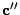
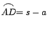
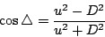
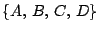
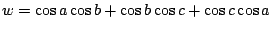
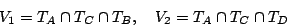
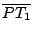

球面三角學研討球面三角形的各種各樣幾何量如邊長、角度、面積、外接圓和內切圓的半徑等等的相互關係。遠在古希臘時代，球面三角學即已倍加重視。Menelous 所著的 ``Sphaerica'' 和 Ptolemy
所著的 ``Almagest'' 總結了當年在球面三角學上的研究成果和它們在天文學上的應用。大體上，他們已經充分理解了直角球面三角形的各種幾何量之間的相互關系；然後一直到十八世紀，球面三角學的研究才又得以蓬勃開展。
在本節的討論中，將以  , , , ,
 等等表示單位球面上給定點 A, B, C 等等的位置向量，亦即
,
,
等等，它們當然都是單位長的向量。由此可見，從向量幾何的觀點來看，球面幾何其實也就是單位長向量的幾何。 等等表示單位球面上給定點 A, B, C 等等的位置向量，亦即
,
,
等等，它們當然都是單位長的向量。由此可見，從向量幾何的觀點來看，球面幾何其實也就是單位長向量的幾何。
由向量運算的幾何內含，即有（參看 [圖 7-8] ）：
- (i)
-
,
,
；
- (ii)
-
,
,
的面積，亦即
|b x c|,
|c x a|,
|a x b|，分別等于
, , ；
- (iii)
- 球面三角形
 的三個內角 A,B,C 等于
和
， 的三個內角 A,B,C 等于
和
，
 和
，
和
之間的兩面角； 和
，
和
之間的兩面角；
- (iv)
- 設
，以後將以 D 表示之。
由行列式的乘法公式即有：
[ 圖 7-8 ]
【定理 7.3】（球面三角正弦定律）：
証明：令 為過球心 O 點而和
垂直的平面，b' 和 c' 是 , 在
上的垂直投影，亦即：
[ 圖 7-9 ]
其中 , 和 a 垂直而 和 
則為 a 的倍積，所以由內積和 ×-積的分配律，得：
上述所作的垂直投影其實是把由 , ,
所張的平行六面體沿 的方向滑動，最後得出由 , ,
所張的長方體，如下圖所示：
因為體積是斜移不變的，由此亦可以看到
由此易見
【定理 7.4】（球面三角餘弦定律）：
証明：由面積的勾股定理，即有：
再者，由內積 ×-積的幾何意義，以及 A 等于
和
之間的兩面角，即有：
□
球面三角餘弦定律的另一証法：
□
【推論 1】：在
（亦即直角球面三角形）時，則有：
- (i)
-
- (ii)
-
[ 圖 7-11 ]
証明：由所設
即有 , 。所以 (i)-式乃是正、餘弦定律的直接結論。再者，
所以
[其他三式的証明留作習題。]
半角公式：
在平面三角學中，我們有下述易算好用的半角公式，即令
，則有：
在球面三角學中，也有類似的半角公式，即：
【推論 2】（球面三角半角公式）：
証明：以
（或
）代入餘弦定律，即得：
或
這也就証明了 (i) 和 (ii)，而 (iii) 則是 (i), (ii) 的直接推論。茲証 (iv)-式如下：
如 [圖 7-12] 所示，
是直角球面三角形，
,
，所以
[ 圖 7-12 ]
阿基米德定理以及它的局部化——球面三角形面積公式：
是球面幾何中至關重要的基本定理。從純幾何的觀點，上述面積公式已經是十分簡潔完美的了；但是從向量代數的不變量理論來看，我們還需要把三角形面積和
{a,b,c} 的基本正交不變量，亦即
之間整理出一個簡潔、整體的關係式。當然，我們可以用球面三角餘弦定律，即
得出
所以這個用向量內積的面積公式當然就可以寫成：
但是這樣一個繁複的表式顯然不好用，因此有必要去探討上述球面三角形面積的內積表達式背後的精簡形式。這種精益求精的所得就是：
【定理 7.5】：
,
,
.
証明：由球面三角正弦、餘弦定律（亦即[定理 7.3]、[定理 7.4]）即有
等等直接代換和代數計算可得：
上式之分母為
而一個令人驚喜的事實是括號內
的代數表式可以簡化成
。所以即得：
同樣的代數計算可得

所以
[註]：在直角球面三角形，即
 時，尚有下述特殊公式，即： 時，尚有下述特殊公式，即：
【推論 1】：若將
的兩邊 a, b
固定而讓第三邊 c 變動，令
則有
証明：由上所設，
將
對于 x
求微分，即
在這裡，有趣的是分子也含有
(1+c1)(1+c2) 因式。約分後即得
再者，將下述餘弦定律
對于 x 微分，即有
所以
[註]：當 φ 從 0 變到 π，
的變化有下述三種情形，即：
- (i)
- 若 ，則 c1+c2>0，而其對邊 c 則從 |a-b| 變到 a+b，函數值
由 0 增加到其在 x=c1+c2 時的唯一極大值，然後再遞減到 0。
[註]：x=c1+c2，即
的幾何意義乃是
的外接圓圓心位于
之上，如 [圖 7-13] 所示。其証明在討論球面四邊形時便會詳細說明。
[ 圖 7-13 ]
- (ii)
- 若 ，則 c1+c2<0；其第三邊 則由 |a-b| 增加到 。因為
一直是正的，
由 0 遞增到
 ，亦即
以半個球面為其上限。 ，亦即
以半個球面為其上限。
- (iii)
- 若 ，則 c1+c2=0；其第三邊 則由 |a-b| 增加到 π，而
則由 0 遞增到 π，亦即
以四分之一球面為其上限。
【推論 2】：設球面三角形
的三邊邊長中 c 和 a+b 保持不變，則
的面積是 |a-b| 的遞減函數。
証明：令
, ,
，則有：
上式中
是因為
由此可見，面積
是 t 的遞增函數，亦即是 |a-b| 的遞減函數。
□
球面三角形的外接圓：
一個球面三角形
的外接圓是由 A, B, C
三點所定的平面
Π 和球面的交集，而它也是平面三角形
在平面
Π 中的外接圓，如 [圖 7-14] 所示：
[ 圖 7-14 ]
令 M 為在 Π 上 Γ 的圓心， N 為在球面上 Γ
的圓心， 。易証 OM 和 Π 垂直，而且 。
[証明留作習題]
由此可見，平面 Π 和圓 Γ 是在以  為軸的旋轉之下的不變子集 (invariant subsets)，設球面在 A 點的切面 TA 交 于 V
點，由上述旋轉不變性可見球面在 Γ 上任給一點 P 的切面 TP
也過 V 點。 為軸的旋轉之下的不變子集 (invariant subsets)，設球面在 A 點的切面 TA 交 于 V
點，由上述旋轉不變性可見球面在 Γ 上任給一點 P 的切面 TP
也過 V 點。
【定理 7.6】：
証明：設
。由所設 過球心 O 而且和
Π 正交，所以 S2(1) 和 Π 在以 為軸的旋轉下都是不變子集，因此
也當然是不變子集。設 P 為 Γ 上任給一點，則有一個 -軸旋轉 ρ，它把 A 點移動到 P 點，易見
，而 ρ 是保持 每一點固定不動的，所以
。
再者，
只含有一個點，所以 V 其實就是
的共交點。由此可見：
而且
是唯一能夠滿足上述三個等式的向量。由直接驗算可知：
所以它必然是
。
□
【推論 1】：單位球面上四點

共圓的充要條件是它們的位置向量
 滿足
滿足
証明：由上述討論，D 位于
的外接圓的充要條件乃是
TD 也過 V 的，即
，亦即：
【推論 2】：設 R 為球面上
的外接圓半徑，亦即 [圖 7-14] 中之
的弧長，則有：
証明：如 [圖 7-14] 所示，
其中
 。
□
球面四邊形 (spherical quadrilaterals)：
一如在平面的情形，兩個三角形若其三邊對應等長則為全等，但是兩個四邊形若其四邊對應等長仍然是可能不全等的；即使在凸的情況，還是需要加上其一個對應對角線等長，才能完全確定其疊合性。設
是一個球面四邊形的頂點的位置向量，它們共有六個交叉內積，亦即是其四個邊長和兩個對角線長的餘弦，它們之間具有一個函數關係，由此可以從給定其中五個之值去確定其第六個之值。我們可以用平行六面體定向體積（亦即行列式）的乘法公式來求得這種函數關係式，即：
兩邊分別用行列式乘法公式計算，即得：
若以
代入即為：
上述是一般情形的普遍關係式，若在
，亦即二對對邊各別等長的特殊情形，則上述關係式可以大為簡化，其結果為
[註]：在平面幾何中，兩對對邊各別等長的四邊形就是平行四邊形，因此這種球面四邊形也可以看成平行四邊形在球面幾何中的推廣（雖然「平行」這個名稱實在已經名不符實的了！ ）。其實，這種球面四邊形除了沒有兩對對邊互相平行這個性質之外，也具有平行四邊形的其他性質，例如其對角線互相平分、兩對對角各別相等
[証明留作習題] 。再者，我們也可以用對角線互相平分來直接驗証上述關係式：
[ 圖 7-15 ]
如 [圖 7-15] 所示，即有餘弦定律公式：
兩式相加，即得
亦即
再者，上述四邊形頂點共圓的充要條件是 d1=d2=d，亦即
由此可見，[定理 7.5]的[推論 1]中
的條件式：
其幾何意義是
的外接圓圓心位于
之上。
[在平面幾何中， 是外接圓的直徑和
是等價的，顯然也是 a, b 邊固定時
面積的極大。在此值得一提者是：二邊邊長給定的三角形，在第三邊為其外接圓的直徑時面積極大在非歐幾何中亦成立。] 是外接圓的直徑和
是等價的，顯然也是 a, b 邊固定時
面積的極大。在此值得一提者是：二邊邊長給定的三角形，在第三邊為其外接圓的直徑時面積極大在非歐幾何中亦成立。]
球面四邊形的面積：
在歐氏平面幾何中，矩形面積公式扮演著重要的角色。再者，矩形乃是平行四邊形的特例，亦即對角線等長的平行四邊形（或者說，是四頂點共圓的平行四邊形）。所以，在球面幾何中，矩形的自然推廣就是上述球面「平行四邊形」在四頂點共圓（或對角線等長）的情形。由 [定理 7.5] 的 [推論 1] 可見，給定兩對對邊邊長（設為 a, b）的「平行四邊形」之中，其面積以矩形為極大。
【定理 7.7】：（球面矩形面積公式）在單位球面上以 a, b 為其兩對對邊長的矩形，其面積公式為
証明：令其對角線長為 c（兩者等長）。則有
亦即
其實，頂點共圓時面積為極大並不只限于「平行四邊形」，詳見下述[定理 7.8]：
【定理 7.8】：在四邊邊長給定為
而且總長少于 的四邊形中，其面積以頂點共圓時為唯一的極大值，而且遠離共圓的變形使得面積愈來愈小。
証明：令
, ，其中
（在
非凸時，我們選定
是位于內部的那條對角線），以
,
分別表示
和
 的面積，則有： 的面積，則有：
其中
[選取頂點之順序使得
和
都是正的。]
由[定理 7.5] [推論 1]的微分計算，即有
現在讓我們用向量代數來分析一下上式右側的幾何意義：令
，則有
是
的線性組合而且
，所以
再者，設 P 是  上任給一點，則由
可見
乃是
a x c 的一個倍積，所以 上任給一點，則由
可見
乃是
a x c 的一個倍積，所以
令 V1, V2 分別是 TB, TD 和 的交點，亦即

則有
直接計算可得
由此可見
所以在 V1=V2 時 A(x) 為極大，而 V1=V2 也就是頂點共圓。
□
【例題 1】：設 x0 為四邊形面積函數的極值點，即
若
c1+c2=c3+c4，則顯然
x0=c1+c2=c3+c4 是所求之解，再者在這種情形，
乃是外接圓的直徑而
和
各別都是極大。
若
（可以設
c1+c2>c3+c4 ），由條件式
即
所以有
令其為 λ，則有
再由
即求得
注意: 在
c1+c2 = c3+c4 時，上述公式即為
所以上述由
表達 的公式是普遍成立的！
【例題 2】：設四邊形的四個邊長依序取定為
，
令 φ 為 的角度，則其面積為 φ 的函數，亦即
A(x), 。由餘弦定律，即
對 x 求微分，即得
再者，原先由[定理 8]的証明已得
所以
【習題】：
- (1)
- 試問球面上一個保長變換的定點子集有那些可能性？並舉例說明你所說的那種可能性是的確可能的。
- (2)
- 設
是一個直角球面三角形，
。試証
- (3)
- 設 S2(r) 是一個以 O 為球心，半徑為 r 的球面。P
是球外一個給定點（如 [圖 7-16] 所示）：
[ 圖 7-16 ]
設 為過 P 點而且交 S2(r) 于 Q1, Q2 的直線。試証恆有
[提示：設 u 是直線 上的單位長向量，
,
而 X 是 上的動點，則有
，其中 k 是
的有向長度，而
的條件式則是
。]
- (4)
- 設 PTi 是和 S2(r) 相切于 Ti 的那條切線，i=1,2
。試証
 和
等長，並描述所有過 P 點和 S2(r) 相切的切點所組成的點集。
- (5)
- 令 P' 是位于直線 OP 之上而且
的點，Π 是和 OP 正交于 P' 點的平面，令
 。試証 成調和點列，亦即
。試証 成調和點列，亦即
|